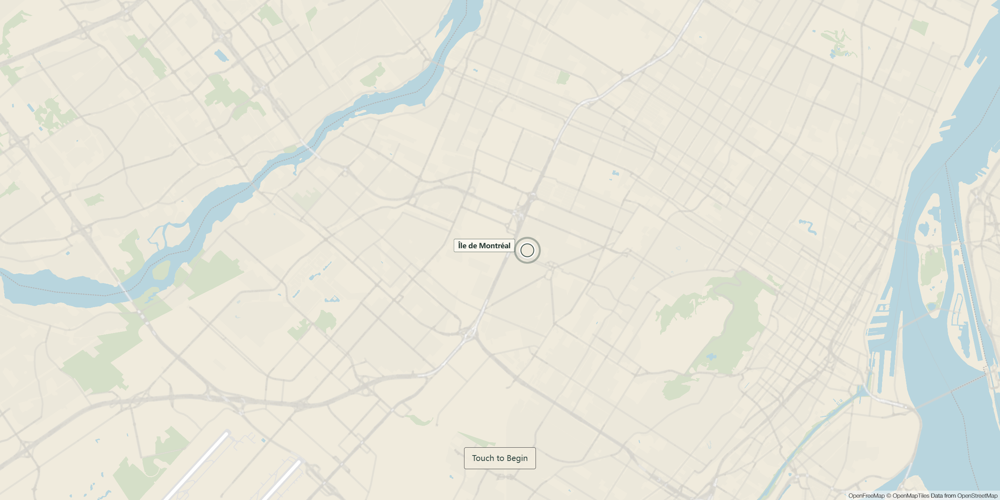
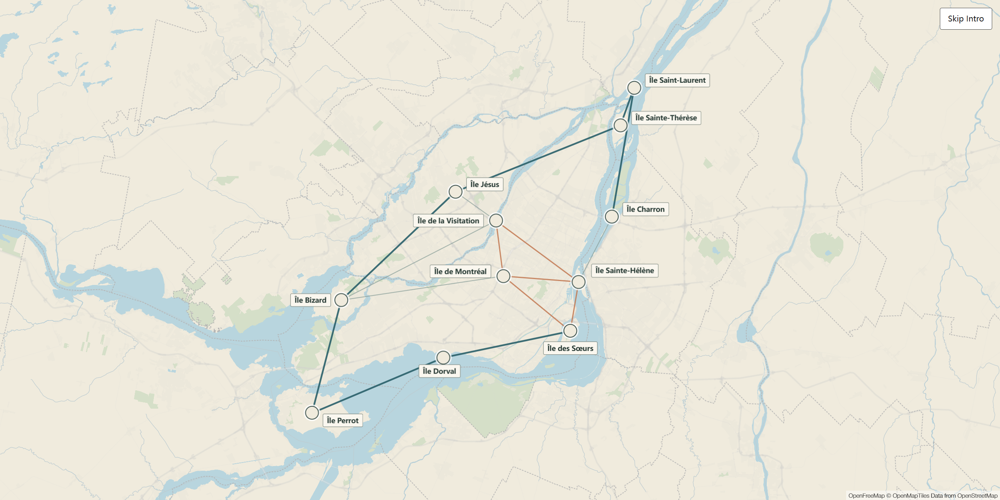
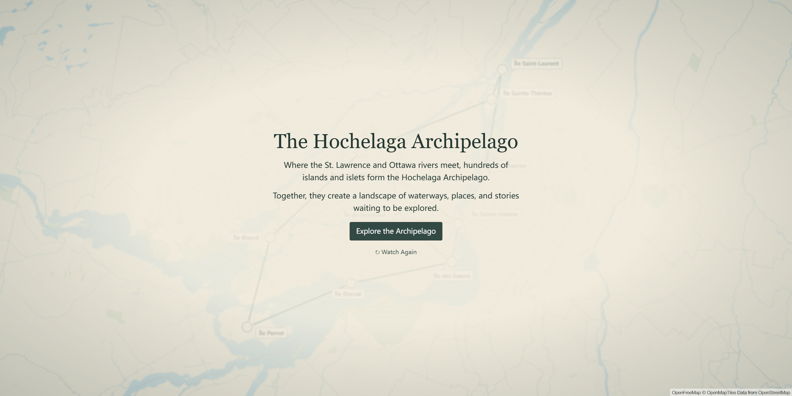

Design Journal
Week 6
Design Journal
Junming He
Hochelaga Archipelago
October 27, 2026
What I Worked On
This week, I continued working on the opening sequence for our interactive map of the Hochelaga Archipelago. My main focus was to improve the opening based on the feedback I received last week, particularly the pacing of the animation and how visitors interact with it. I also continued developing the opening as a functional web prototype using HTML, CSS, and JavaScript, allowing me to test how the design works in a browser.
Refining the Opening Based on Feedback
Before starting the integration, I made several adjustments to the opening based on last week's feedback. One of the main issues was the pacing of the animation. In the previous version, the connections formed relatively quickly, and the introduction text appeared soon afterward. I realized that this might not give visitors enough time to observe what was happening on the map, especially when they were seeing the animation for the first time. To improve this, I adjusted the timing of the connection animation and delayed the appearance of the introduction text. I wanted to create a clearer viewing sequence: visitors first see the map zoom out and reveal more islands, then watch the connections gradually form between them, and finally read the introduction. My intention was to give each part of the animation enough time to be noticed, rather than having several visual elements competing for attention at the same time.
I also added two new interaction features. The first was Touch to Begin. Instead of automatically playing the opening when the page loads, the screen now starts with Montréal highlighted by a ripple animation. Visitors can start the experience by clicking the Montréal marker or pressing the Touch to Begin button. I thought this would be more appropriate for a museum setting, since visitors might approach the installation at different times. Allowing them to start the animation themselves gives them a clearer entry point and reduces the possibility of missing the beginning of the sequence.
The second feature was Watch Again, which appears after the opening finishes. This allows visitors to replay the animation if they missed something or want to look at the connections more carefully. I wanted to give visitors more control over the experience, rather than assuming everyone would understand everything after watching it once.
These changes did not significantly alter the overall visual concept, but they improved the pacing and made the opening more flexible for different visitors.



Developing the Opening as an HTML Prototype
Another part of my work was developing the opening into a functional web prototype. My original idea was to begin with a map focused on Montréal and gradually zoom out to reveal more islands within the Hochelaga Archipelago. As the map expands, connections appear between different islands, eventually leading to a short introduction that encourages visitors to explore further. To turn this idea into something I could actually test, I developed the opening using HTML, CSS, and JavaScript. I used MapLibre to display the map, while JavaScript controlled the camera movement, island markers, and connection animations. Instead of trying to complete the entire opening at once, I worked on different elements gradually. I first focused on displaying the map and getting the camera animation to work, then added the island markers, connections, and introduction text.
One of the main things I paid attention to was the map's visual presentation. Since the opening is about the Hochelaga Archipelago rather than Montréal alone, I needed to make sure the final view included enough surrounding islands and waterways to communicate the larger geographical context. I experimented with the camera's zoom level and positioning, as well as the size and placement of the island labels. Sometimes an adjustment seemed reasonable at first but looked different when viewed on a full browser screen, so I had to repeatedly test and refine the result. I also worked on the introduction text and its presentation. I wanted the text to briefly explain what the Hochelaga Archipelago is without providing too much information at the beginning. The purpose of the opening is not to explain everything, but to establish the geographical context and encourage visitors to continue exploring. Throughout this process, I tested the opening directly in the browser and made adjustments based on what I observed. I found this especially useful because some design decisions, such as how long a connection animation should last or when the text should appear, are difficult to evaluate without experiencing the full sequence.
Next Step
For next week, I plan to explore how to integrate this opening prototype into our group's main project. Since the group is using React while my opening was developed with HTML, CSS, and JavaScript, I will need to understand the existing project structure and figure out how to adapt my prototype to work within it. My main goal is to preserve the current visual design and interactions while making sure the opening connects smoothly to the group's interactive map. I also want to avoid making unnecessary changes to other group members' work during the integration process.